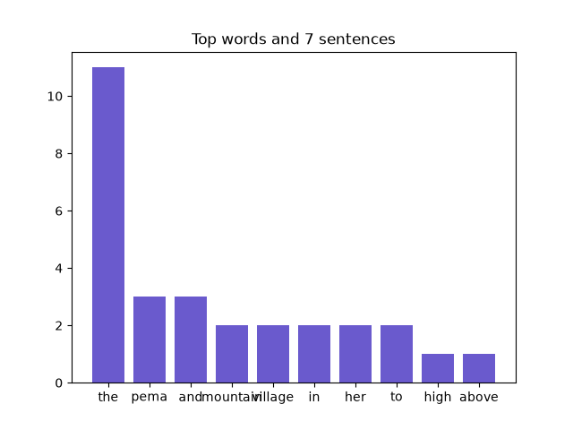

Year 2 · 2025 · Building Complexity
Project 13: Book Detective
Book Detective is the Year 2 capstone, Project 13, across Days 36 to 39. Students plan and build a TextAnalyzer class that loads a book, cleans the text, counts words with Counter, reports statistics, tests itself with assert, and saves a chart. The week before, the lesson called Bug Safari feeds sentences full of abbreviations like "U.S.A." to this kind of code and logs every way it breaks.
What I taught that week
From the Year 2 curriculum, Week 8: Capstone & Showcase
Day 36: Capstone I: Book Detective Plan. Project 7. Planning a TextAnalyzer class that loads a book and reports total words, unique words, longest word, average word length, and top words. Sketching attributes and methods on paper.
Day 37: Capstone II: Building the Core. Coding the class: loading a file with try/except, cleaning text, counting with Counter, and one method per statistic. Testing each method with assert.
Day 38: Capstone III: Charts & Reports. Adding a matplotlib chart method, saving a full text report to a file, and letting users pick a book from a menu. Reusing functions from kidtools.py.
Day 39: Playtest, Polish & Debug. Swapping projects so testers can try to break them with odd files. Fixing bugs, adding docstrings, and rehearsing a three-minute demo.
Day 40: Showcase Day & Year 3 Preview. Presenting Book Detective reports to classmates and guests, plus a skills checklist. Preview of KidCode 3: the sentences that broke our code are what NLP and the spaCy library are built to solve.
What students built
86 students finished the capstone, the most-completed project of Year 2. Every one defines a class, counts with Counter, compares texts with sets, saves a chart, and runs assert tests. At a median of 120 lines, it is tied with Monster Battle Arena for the longest Year 2 project.
One student's program
This is one real submission, shown as the student wrote it apart from the removed name header. It was chosen by a fixed rule rather than for being the best: it is the submission closest to the project's median length among those that ran cleanly and contain nothing that could identify anyone. Parts are skipped where marked with …
class TextAnalyzer:
def __init__(self, path):
self.path = path
self.text = ""
self.words = []
self.sentences = []
def load(self):
try:
with open(self.path) as f:
self.text = f.read()
except FileNotFoundError:
print("Could not open", self.path)
def clean(self):
for end in "!?":
self.text = self.text.replace(end, ".")
self.sentences = [s.strip() for s in self.text.split(".") if s.strip()]
lowered = self.text.lower()
for mark in string.punctuation:
lowered = lowered.replace(mark, "")
self.words = lowered.split()
def total_words(self):
return len(self.words)
def unique_words(self):
return len(set(self.words))
def longest_word(self):
return max(self.words, key=len) if self.words else ""
def average_word_length(self):
return sum(len(w) for w in self.words) / len(self.words) if self.words else 0.0
def sentence_count(self):
return len(self.sentences)
def words_per_sentence(self):
if not self.sentences:
return 0.0
return self.total_words() / self.sentence_count()
def top_words(self, n=10):
counts = Counter([w for w in self.words if w not in STOP_WORDS])
return counts.most_common(n)
def chart(self, filename):
top = self.top_words()
plt.bar([w for w, c in top], [c for w, c in top], color="slateblue")
plt.title("Top words and " + str(self.sentence_count()) + " sentences")
plt.savefig(filename)
plt.show()
plt.close()
…
def run_tests():
with open("test_sample.txt", "w") as f:
f.write("The cat and the hat. The cat sat!")
checker = TextAnalyzer("test_sample.txt")
checker.load()
checker.clean()
assert checker.total_words() == 8
assert checker.unique_words() == 5
assert checker.longest_word() in ("the", "cat", "and", "hat", "sat")
assert abs(checker.average_word_length() - 3.0) < 0.001
os.remove("test_sample.txt")
print("All TextAnalyzer tests passed.")
A sample run of that program (the input was typed for this page)
All TextAnalyzer tests passed.
1. The Mountain Village
2. The Lighthouse Keeper
3. The Desert Caravan
Choose a book or q: 1
The Mountain Village
words: 94 | unique: 71
longest word: sparkling
sentences: 7
words per sentence: 13.4
top words: [('the', 11), ('pema', 3), ('and', 3), ('mountain', 2), ('village', 2), ('in', 2), ('her', 2), ('to', 2), ('high', 1), ('above', 1)]
1. The Mountain Village
2. The Lighthouse Keeper
3. The Desert Caravan
Choose a book or q: q

The worksheet for this unit
Each unit has a pre- and post-assessment written from the same curriculum. This is the first page of the pre-assessment for the unit this project sits in: Libraries, Modules & Text as Data (Weeks 6–8 (Days 26–40), 11 questions).

Where it fits
The last day of Year 2 previews Year 3 with a sentence from the curriculum: the sentences that broke our code are what NLP and spaCy are built to solve. Year 3's first project, Tokenizer Showdown, scores this kind of cleaning code against spaCy.
Looking back
Book Detective is where Year 2 and Year 3 meet. The clean() method below, which lowercases the text, strips punctuation and splits on spaces, is exactly the approach Year 3 opens by testing and breaking.